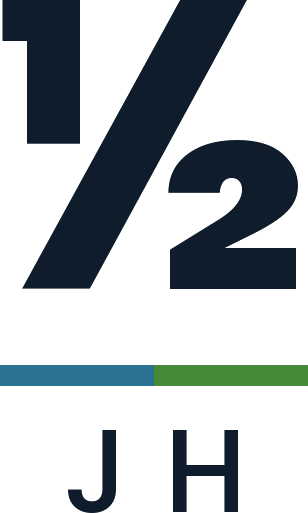
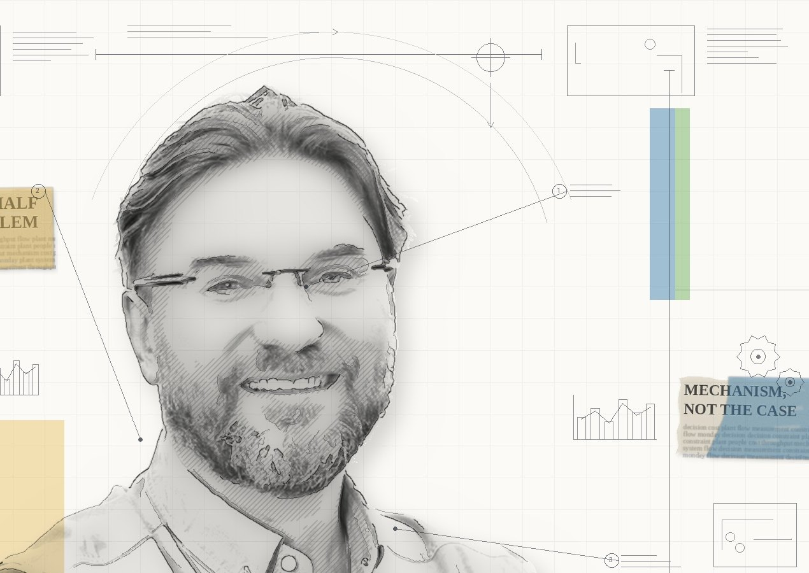

The Other Half of the ProblemJarosław HocOperations
and people
More than thirty years in continuous process manufacturing: process, utilities, energy, water, control systems. Today I run process and utilities at a large food and beverage plant.

The solution is calculated, agreed, approved — and it doesn’t go in. The cause is almost never technical.
The measurement system decides what people will see as a problem — and what they will stop reporting.
Removed in one place, it comes back in another — and changes kind. It is not where the noise is.
People run the solution. If it doesn’t pay off for them, or they never hear what came of their report, the loop doesn’t close.No. 1 · 24 December 2026
The loop closes when the person who reported it hears what came of it. The last step is the one we usually skip.
The cause is almost never technical. It sits in:
how the measurement system is built,
where the constraint actually is,
what pays off for the people expected to run it.
I write about the mechanism, not the case: no company, plant, supplier or personal names.— HOUSE RULE
Books I read in sequence — together with where I disagree — and mechanisms I have watched operate. Every piece ends with one thing to do. If it doesn’t, it isn’t finished.
Email is easiest: kontakt@jaroslawhoc.pl.